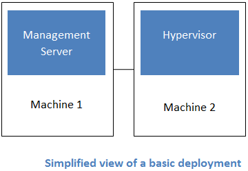

What is Apache CloudStack?¶
Apache CloudStack is an open source Infrastructure-as-a-Service platform that manages and orchestrates pools of storage, network, and computer resources to build a public or private IaaS compute cloud.
With CloudStack you can:
- Set up an on-demand elastic cloud computing service.
- Allow end-users to provision resources
What can Apache CloudStack do?¶
Multiple Hypervisor Support¶
CloudStack works with a variety of hypervisors and hypervisor-like technologies. A single cloud can contain multiple hypervisor implementations. As of the current release CloudStack supports:
- BareMetal (via IPMI)
- Hyper-V
- KVM
- LXC
- vSphere (via vCenter)
- Xenserver
- Xen Project
Massively Scalable Infrastructure Management¶
CloudStack can manage tens of thousands of physical servers installed in geographically distributed datacenters. The management server scales near-linearly eliminating the need for cluster-level management servers. Maintenance or other outages of the management server can occur without affecting the virtual machines running in the cloud.
Automatic Cloud Configuration Management¶
CloudStack automatically configures the network and storage settings for each virtual machine deployment. Internally, a pool of virtual appliances support the operation of configuration of the cloud itself. These appliances offer services such as firewalling, routing, DHCP, VPN, console proxy, storage access, and storage replication. The extensive use of horizontally scalable virtual machines simplifies the installation and ongoing operation of a cloud.
Graphical User Interface¶
CloudStack offers an administrators web interface used for provisioning and managing the cloud, as well as an end-user’s Web interface, used for running VMs and managing VM templates. The UI can be customized to reflect the desired service provider or enterprise look and feel.
API¶
CloudStack provides a REST-like API for the operation, management and use of the cloud.
AWS EC2 API Support¶
CloudStack provides an EC2 API translation layer to permit the common EC2 tools to be used in the use of a CloudStack cloud.
High Availability¶
CloudStack has a number of features to increase the availability of the system. The Management Server itself may be deployed in a multi-node installation where the servers are load balanced. MySQL may be configured to use replication to provide for failover in the event of database loss. For the hosts, CloudStack supports NIC bonding and the use of separate networks for storage as well as iSCSI Multipath.
Deployment Architecture Overview¶
Generally speaking, most CloudStack deployments consist of the management server and the resources to be managed. During deployment you inform the management server of the resources to be managed, such as IP address blocks, storage devices, hypervisors, and VLANs.
The minimum installation consists of one machine running the CloudStack Management Server and another machine to act as the cloud infrastructure (in this case, a very simple infrastructure consisting of one host running hypervisor software). In its smallest deployment, a single machine can act as both the Management Server and the hypervisor host (using the KVM hypervisor).
A more full-featured installation consists of a highly-available multi-node Management Server installation and up to tens of thousands of hosts using any of several networking technologies.
Management Server Overview¶
The management server orchestrates and allocates the resources in your cloud deployment.
The management server typically runs on a dedicated machine or as a virtual machine. It controls allocation of virtual machines to hosts and assigns storage and IP addresses to the virtual machine instances. The Management Server runs in an Apache Tomcat container and requires a MySQL database for persistence.
The management server:
- Provides the web interface for both the adminstrator and end user.
- Provides the API interfaces for both the CloudStack API as well as the EC2 interface.
- Manages the assignment of guest VMs to a specific compute resource
- Manages the assignment of public and private IP addresses.
- Allocates storage during the VM instantiation process.
- Manages snapshots, disk images (templates), and ISO images.
- Provides a single point of configuration for your cloud.
Cloud Infrastructure Overview¶
Resources within the cloud are managed as follows:
- Regions: A collection of one or more geographically proximate zones managed by one or more management servers.
- Zones: Typically, a zone is equivalent to a single datacenter. A zone consists of one or more pods and secondary storage.
- Pods: A pod is usually a rack, or row of racks that includes a layer-2 switch and one or more clusters.
- Clusters: A cluster consists of one or more homogenous hosts and primary storage.
- Host: A single compute node within a cluster; often a hypervisor.
- Primary Storage: A storage resource typically provided to a single cluster for the actual running of instance disk images. (Zone-wide primary storage is an option, though not typically used.)
- Secondary Storage: A zone-wide resource which stores disk templates, ISO images, and snapshots.
Networking Overview¶
CloudStack offers many types of networking, but they typically fall into one of two scenarios:
- Basic: Most analogous to AWS-classic style networking. Provides a single flat layer-2 network where guest isolation is provided at layer-3 by the hypervisors bridge device.
- Advanced: This typically uses layer-2 isolation such as VLANs, though this category also includes SDN technologies such as Nicira NVP.
CloudStack Terminology¶
About Regions¶
To increase reliability of the cloud, you can optionally group resources into multiple geographic regions. A region is the largest available organizational unit within a CloudStack deployment. A region is made up of several availability zones, where each zone is roughly equivalent to a datacenter. Each region is controlled by its own cluster of Management Servers, running in one of the zones. The zones in a region are typically located in close geographical proximity. Regions are a useful technique for providing fault tolerance and disaster recovery.
By grouping zones into regions, the cloud can achieve higher availability and scalability. User accounts can span regions, so that users can deploy VMs in multiple, widely-dispersed regions. Even if one of the regions becomes unavailable, the services are still available to the end-user through VMs deployed in another region. And by grouping communities of zones under their own nearby Management Servers, the latency of communications within the cloud is reduced compared to managing widely-dispersed zones from a single central Management Server.
Usage records can also be consolidated and tracked at the region level, creating reports or invoices for each geographic region.

Regions are visible to the end user. When a user starts a guest VM on a particular CloudStack Management Server, the user is implicitly selecting that region for their guest. Users might also be required to copy their private templates to additional regions to enable creation of guest VMs using their templates in those regions.
About Zones¶
A zone is the second largest organizational unit within a CloudStack deployment. A zone typically corresponds to a single datacenter, although it is permissible to have multiple zones in a datacenter. The benefit of organizing infrastructure into zones is to provide physical isolation and redundancy. For example, each zone can have its own power supply and network uplink, and the zones can be widely separated geographically (though this is not required).
A zone consists of:
- One or more pods. Each pod contains one or more clusters of hosts and one or more primary storage servers.
- A zone may contain one or more primary storage servers, which are shared by all the pods in the zone.
- Secondary storage, which is shared by all the pods in the zone.
Zones are visible to the end user. When a user starts a guest VM, the user must select a zone for their guest. Users might also be required to copy their private templates to additional zones to enable creation of guest VMs using their templates in those zones.
Zones can be public or private. Public zones are visible to all users. This means that any user may create a guest in that zone. Private zones are reserved for a specific domain. Only users in that domain or its subdomains may create guests in that zone.
Hosts in the same zone are directly accessible to each other without having to go through a firewall. Hosts in different zones can access each other through statically configured VPN tunnels.
For each zone, the administrator must decide the following.
- How many pods to place in each zone.
- How many clusters to place in each pod.
- How many hosts to place in each cluster.
- (Optional) How many primary storage servers to place in each zone and total capacity for these storage servers.
- How many primary storage servers to place in each cluster and total capacity for these storage servers.
- How much secondary storage to deploy in a zone.
When you add a new zone using the CloudStack UI, you will be prompted to configure the zone’s physical network and add the first pod, cluster, host, primary storage, and secondary storage.
In order to support zone-wide functions for VMware, CloudStack is aware of VMware Datacenters and can map each Datacenter to a CloudStack zone. To enable features like storage live migration and zone-wide primary storage for VMware hosts, CloudStack has to make sure that a zone contains only a single VMware Datacenter. Therefore, when you are creating a new CloudStack zone, you can select a VMware Datacenter for the zone. If you are provisioning multiple VMware Datacenters, each one will be set up as a single zone in CloudStack.
Note
If you are upgrading from a previous CloudStack version, and your existing deployment contains a zone with clusters from multiple VMware Datacenters, that zone will not be forcibly migrated to the new model. It will continue to function as before. However, any new zone-wide operations, such as zone-wide primary storage and live storage migration, will not be available in that zone.
About Pods¶
A pod often represents a single rack. Hosts in the same pod are in the same subnet. A pod is the third-largest organizational unit within a CloudStack deployment. Pods are contained within zones. Each zone can contain one or more pods. A pod consists of one or more clusters of hosts and one or more primary storage servers. Pods are not visible to the end user.
About Clusters¶
A cluster provides a way to group hosts. To be precise, a cluster is a XenServer server pool, a set of KVM servers, , or a VMware cluster preconfigured in vCenter. The hosts in a cluster all have identical hardware, run the same hypervisor, are on the same subnet, and access the same shared primary storage. Virtual machine instances (VMs) can be live-migrated from one host to another within the same cluster, without interrupting service to the user.
A cluster is the fourth-largest organizational unit within a CloudStack deployment. Clusters are contained within pods, and pods are contained within zones. Size of the cluster is limited by the underlying hypervisor, although the CloudStack recommends less in most cases; see Best Practices.
A cluster consists of one or more hosts and one or more primary storage servers.
CloudStack allows multiple clusters in a cloud deployment.
Even when local storage is used exclusively, clusters are still required organizationally, even if there is just one host per cluster.
When VMware is used, every VMware cluster is managed by a vCenter server. An Administrator must register the vCenter server with CloudStack. There may be multiple vCenter servers per zone. Each vCenter server may manage multiple VMware clusters.
About Hosts¶
A host is a single computer. Hosts provide the computing resources that run guest virtual machines. Each host has hypervisor software installed on it to manage the guest VMs. For example, a host can be a Citrix XenServer server, a Linux KVM-enabled server, an ESXi server, or a Windows Hyper-V server.
The host is the smallest organizational unit within a CloudStack deployment. Hosts are contained within clusters, clusters are contained within pods, pods are contained within zones, and zones can be contained within regions.
Hosts in a CloudStack deployment:
- Provide the CPU, memory, storage, and networking resources needed to host the virtual machines
- Interconnect using a high bandwidth TCP/IP network and connect to the Internet
- May reside in multiple data centers across different geographic locations
- May have different capacities (different CPU speeds, different amounts of RAM, etc.), although the hosts within a cluster must all be homogeneous
Additional hosts can be added at any time to provide more capacity for guest VMs.
CloudStack automatically detects the amount of CPU and memory resources provided by the hosts.
Hosts are not visible to the end user. An end user cannot determine which host their guest has been assigned to.
For a host to function in CloudStack, you must do the following:
- Install hypervisor software on the host
- Assign an IP address to the host
- Ensure the host is connected to the CloudStack Management Server.
About Primary Storage¶
Primary storage is associated with a cluster, and it stores virtual disks for all the VMs running on hosts in that cluster. On KVM and VMware, you can provision primary storage on a per-zone basis.
You can add multiple primary storage servers to a cluster or zone. At least one is required. It is typically located close to the hosts for increased performance. CloudStack manages the allocation of guest virtual disks to particular primary storage devices.
It is useful to set up zone-wide primary storage when you want to avoid extra data copy operations. With cluster-based primary storage, data in the primary storage is directly available only to VMs within that cluster. If a VM in a different cluster needs some of the data, it must be copied from one cluster to another, using the zone’s secondary storage as an intermediate step. This operation can be unnecessarily time-consuming.
For Hyper-V, SMB/CIFS storage is supported. Note that Zone-wide Primary Storage is not supported in Hyper-V.
Ceph/RBD storage is only supported by the KVM hypervisor. It can be used as Zone-wide Primary Storage.
CloudStack is designed to work with all standards-compliant iSCSI and NFS servers that are supported by the underlying hypervisor, including, for example:
- SolidFire for iSCSI
- Dell EqualLogic™ for iSCSI
- Network Appliances filers for NFS and iSCSI
- Scale Computing for NFS
If you intend to use only local disk for your installation, you can skip adding separate primary storage.
About Secondary Storage¶
Secondary storage stores the following:
- Templates — OS images that can be used to boot VMs and can include additional configuration information, such as installed applications
- ISO images — disc images containing data or bootable media for operating systems
- Disk volume snapshots — saved copies of VM data which can be used for data recovery or to create new templates
The items in secondary storage are available to all hosts in the scope of the secondary storage, which may be defined as per zone or per region.
To make items in secondary storage available to all hosts throughout the cloud, you can add object storage in addition to the zone-based NFS Secondary Staging Store. It is not necessary to copy templates and snapshots from one zone to another, as would be required when using zone NFS alone. Everything is available everywhere.
For Hyper-V hosts, SMB/CIFS storage is supported.
CloudStack provides plugins that enable both OpenStack Object Storage (Swift, swift.openstack.org) and Amazon Simple Storage Service (S3) object storage. When using one of these storage plugins, you configure Swift or S3 storage for the entire CloudStack, then set up the NFS Secondary Staging Store for each zone. The NFS storage in each zone acts as a staging area through which all templates and other secondary storage data pass before being forwarded to Swift or S3. The backing object storage acts as a cloud-wide resource, making templates and other data available to any zone in the cloud.
Warning
Heterogeneous Secondary Storage is not supported in Regions. For example, you cannot set up multiple zones, one using NFS secondary and the other using S3 or Swift secondary.
About Physical Networks¶
Part of adding a zone is setting up the physical network. One or (in an advanced zone) more physical networks can be associated with each zone. The network corresponds to a NIC on the hypervisor host. Each physical network can carry one or more types of network traffic. The choices of traffic type for each network vary depending on whether you are creating a zone with basic networking or advanced networking.
A physical network is the actual network hardware and wiring in a zone. A zone can have multiple physical networks. An administrator can:
- Add/Remove/Update physical networks in a zone
- Configure VLANs on the physical network
- Configure a name so the network can be recognized by hypervisors
- Configure the service providers (firewalls, load balancers, etc.) available on a physical network
- Configure the IP addresses trunked to a physical network
- Specify what type of traffic is carried on the physical network, as well as other properties like network speed
Basic Zone Network Traffic Types¶
When basic networking is used, there can be only one physical network in the zone. That physical network carries the following traffic types:
- Guest. When end users run VMs, they generate guest traffic. The guest VMs communicate with each other over a network that can be referred to as the guest network. Each pod in a basic zone is a broadcast domain, and therefore each pod has a different IP range for the guest network. The administrator must configure the IP range for each pod.
- Management. When CloudStack’s internal resources communicate with each other, they generate management traffic. This includes communication between hosts, system VMs (VMs used by CloudStack to perform various tasks in the cloud), and any other component that communicates directly with the CloudStack Management Server. You must configure the IP range for the system VMs to use.
Note
We strongly recommend the use of separate NICs for management traffic and guest traffic.
- Public. Public traffic is generated when VMs in the cloud access the Internet. Publicly accessible IPs must be allocated for this purpose. End users can use the CloudStack UI to acquire these IPs to implement NAT between their guest network and the public network, as described in Acquiring a New IP Address.
- Storage. While labeled “storage” this is specifically about secondary storage, and doesn’t affect traffic for primary storage. This includes traffic such as VM templates and snapshots, which is sent between the secondary storage VM and secondary storage servers. CloudStack uses a separate Network Interface Controller (NIC) named storage NIC for storage network traffic. Use of a storage NIC that always operates on a high bandwidth network allows fast template and snapshot copying. You must configure the IP range to use for the storage network.
In a basic network, configuring the physical network is fairly straightforward. In most cases, you only need to configure one guest network to carry traffic that is generated by guest VMs. If you use a NetScaler load balancer and enable its elastic IP and elastic load balancing (EIP and ELB) features, you must also configure a network to carry public traffic. CloudStack takes care of presenting the necessary network configuration steps to you in the UI when you add a new zone.
Basic Zone Guest IP Addresses¶
When basic networking is used, CloudStack will assign IP addresses in the CIDR of the pod to the guests in that pod. The administrator must add a Direct IP range on the pod for this purpose. These IPs are in the same VLAN as the hosts.
Advanced Zone Network Traffic Types¶
When advanced networking is used, there can be multiple physical networks in the zone. Each physical network can carry one or more traffic types, and you need to let CloudStack know which type of network traffic you want each network to carry. The traffic types in an advanced zone are:
- Guest. When end users run VMs, they generate guest traffic. The guest VMs communicate with each other over a network that can be referred to as the guest network. This network can be isolated or shared. In an isolated guest network, the administrator needs to reserve VLAN ranges to provide isolation for each CloudStack account’s network (potentially a large number of VLANs). In a shared guest network, all guest VMs share a single network.
- Management. When CloudStack’s internal resources communicate with each other, they generate management traffic. This includes communication between hosts, system VMs (VMs used by CloudStack to perform various tasks in the cloud), and any other component that communicates directly with the CloudStack Management Server. You must configure the IP range for the system VMs to use.
- Public. Public traffic is generated when VMs in the cloud access the Internet. Publicly accessible IPs must be allocated for this purpose. End users can use the CloudStack UI to acquire these IPs to implement NAT between their guest network and the public network, as described in “Acquiring a New IP Address” in the Administration Guide.
- Storage. While labeled “storage” this is specifically about secondary storage, and doesn’t affect traffic for primary storage. This includes traffic such as VM templates and snapshots, which is sent between the secondary storage VM and secondary storage servers. CloudStack uses a separate Network Interface Controller (NIC) named storage NIC for storage network traffic. Use of a storage NIC that always operates on a high bandwidth network allows fast template and snapshot copying. You must configure the IP range to use for the storage network.
These traffic types can each be on a separate physical network, or they can be combined with certain restrictions. When you use the Add Zone wizard in the UI to create a new zone, you are guided into making only valid choices.
Advanced Zone Guest IP Addresses¶
When advanced networking is used, the administrator can create additional networks for use by the guests. These networks can span the zone and be available to all accounts, or they can be scoped to a single account, in which case only the named account may create guests that attach to these networks. The networks are defined by a VLAN ID, IP range, and gateway. The administrator may provision thousands of these networks if desired. Additionally, the administrator can reserve a part of the IP address space for non-CloudStack VMs and servers.
Advanced Zone Public IP Addresses¶
When advanced networking is used, the administrator can create additional networks for use by the guests. These networks can span the zone and be available to all accounts, or they can be scoped to a single account, in which case only the named account may create guests that attach to these networks. The networks are defined by a VLAN ID, IP range, and gateway. The administrator may provision thousands of these networks if desired.
System Reserved IP Addresses¶
In each zone, you need to configure a range of reserved IP addresses for the management network. This network carries communication between the CloudStack Management Server and various system VMs, such as Secondary Storage VMs, Console Proxy VMs, and DHCP.
The reserved IP addresses must be unique across the cloud. You cannot, for example, have a host in one zone which has the same private IP address as a host in another zone.
The hosts in a pod are assigned private IP addresses. These are typically RFC1918 addresses. The Console Proxy and Secondary Storage system VMs are also allocated private IP addresses in the CIDR of the pod that they are created in.
Make sure computing servers and Management Servers use IP addresses outside of the System Reserved IP range. For example, suppose the System Reserved IP range starts at 192.168.154.2 and ends at 192.168.154.7. CloudStack can use .2 to .7 for System VMs. This leaves the rest of the pod CIDR, from .8 to .254, for the Management Server and hypervisor hosts.
In all zones:
Provide private IPs for the system in each pod and provision them in CloudStack.
For KVM and XenServer, the recommended number of private IPs per pod is one per host. If you expect a pod to grow, add enough private IPs now to accommodate the growth.
In a zone that uses advanced networking:
For zones with advanced networking, we recommend provisioning enough private IPs for your total number of customers, plus enough for the required CloudStack System VMs. Typically, about 10 additional IPs are required for the System VMs. For more information about System VMs, see the section on working with SystemVMs in the Administrator’s Guide.
When advanced networking is being used, the number of private IP addresses available in each pod varies depending on which hypervisor is running on the nodes in that pod. Citrix XenServer and KVM use link-local addresses, which in theory provide more than 65,000 private IP addresses within the address block. As the pod grows over time, this should be more than enough for any reasonable number of hosts as well as IP addresses for guest virtual routers. VMWare ESXi, by contrast uses any administrator-specified subnetting scheme, and the typical administrator provides only 255 IPs per pod. Since these are shared by physical machines, the guest virtual router, and other entities, it is possible to run out of private IPs when scaling up a pod whose nodes are running ESXi.
To ensure adequate headroom to scale private IP space in an ESXi pod that uses advanced networking, use one or both of the following techniques:
- Specify a larger CIDR block for the subnet. A subnet mask with a /20 suffix will provide more than 4,000 IP addresses.
- Create multiple pods, each with its own subnet. For example, if you create 10 pods and each pod has 255 IPs, this will provide 2,550 IP addresses.